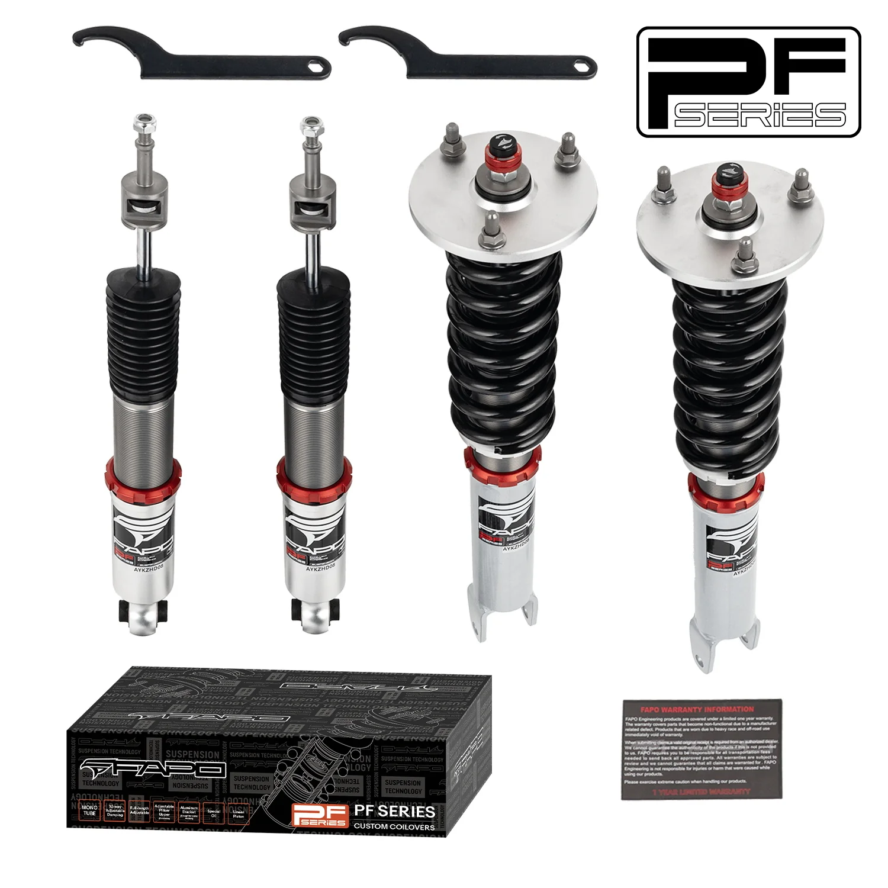

1 / 1932-Way Adjustable tłumienie Zawieszenie gwintowane do Mercedes-Benz C-Class 4th Gen 2WD W205/S205/C205/A205 2014-2021 PF056330
Zgodność Mercedes-Benz Klasa C 4. generacji 2WD W205/S205/C205/A205 2014-2021 Mercedes-Benz Klasa E 5. generacji 2WD W213/S213/C238 2016-2023 Pakiet zawiera Gwinty przednie × 2 szt Gwinty tylne × 2 szt Klucz × 2 szt * Notatka: Nasz zestaw gwintowany to zestaw obniżający, który będzie o 1-1,5 cala niższy niż wysokość fabryczna, nawet przy maksymalnym ustawieniu. Przed zakupem potwierdź, że chcesz obniżyć samochód. Ce…
Compatibility Mercedes-Benz C-Class 4th Gen 2WD W205/S205/C205/A205 2014-2021 Mercedes-Benz E-Class 5th Gen 2WD W213/S213/C238 2016-2023 Package Includes Front coilovers × 2 pcs Rear coilovers × 2 pcs Wrench × 2 pcs * Note: Our coilover is a lowering kit which will be 1-1.5" lower than factory height even at the maximum setting. Please confirm you want to lower the car before purchasing. Features Mono-tube shock design, larger oil & gas capacity Adjustable ride height Adjustable pre-load spring tension High-tensile springs: <0.04 % distortion after 600,000 cycles Fitted rubber boots protect the dampers Improved handling without sacrificing comfort Fast, affordable appearance upgrade Easy installation with proper tools Suitable for track, drift, fast-road & daily driving All pictured accessories included Default 1-year warranty for any manufacturing defect, upgrade to 2 years with our Extended Warranty Program Technical Specifications Spring rate Front: 8 kg/mm (446 lbs/in) Spring rate Rear: 10 kg/mm (557 lbs/in) Adjustable height: Yes Adjustable camber plate: Front only; rear standard mounts Adjustable damper: 32-level damping force
2123 PLN
Opis produktu
Zgodność
- Mercedes-Benz Klasa C 4. generacji 2WD W205/S205/C205/A205 2014-2021
- Mercedes-Benz Klasa E 5. generacji 2WD W213/S213/C238 2016-2023
Pakiet zawiera
- Gwinty przednie × 2 szt
- Gwinty tylne × 2 szt
- Klucz × 2 szt
* Notatka:Nasz zestaw gwintowany to zestaw obniżający, który będzie o 1-1,5 cala niższy niż wysokość fabryczna, nawet przy maksymalnym ustawieniu. Przed zakupem potwierdź, że chcesz obniżyć samochód.
Cechy
- Konstrukcja amortyzatora jednorurowego, większa pojemność oleju i gazu
- Regulowana wysokość jazdy
- Regulowane napięcie sprężyny wstępnej
- Sprężyny o dużej wytrzymałości na rozciąganie: odkształcenie <0,04% po 600 000 cykli
- Dopasowane gumowe buty chronią amortyzatory
- Lepsza obsługa bez utraty komfortu
- Szybka i niedroga aktualizacja wyglądu
- Łatwa instalacja przy użyciu odpowiednich narzędzi
- Nadaje się do toru, driftu, szybkiej jazdy i codziennej jazdy
- W zestawie wszystkie akcesoria widoczne na zdjęciu
- Standardowa roczna gwarancja na każdą wadę produkcyjną, możliwość rozszerzenia do 2 lat w ramach naszego programu rozszerzonej gwarancji
Dane techniczne
- Twardość sprężyny Przód: 8 kg/mm (446 lbs/in)
- Twardość sprężyny Tył: 10 kg/mm (557 lbs/in)
- Regulowana wysokość: Tak
- Regulowana płyta pochylenia: tylko z przodu; standardowe mocowania tylne
- Regulowany amortyzator: 32-stopniowa siła tłumienia
Compatibility
- Mercedes-Benz C-Class 4th Gen 2WD W205/S205/C205/A205 2014-2021
- Mercedes-Benz E-Class 5th Gen 2WD W213/S213/C238 2016-2023
Package Includes
- Front coilovers × 2 pcs
- Rear coilovers × 2 pcs
- Wrench × 2 pcs
* Note: Our coilover is a lowering kit which will be 1-1.5" lower than factory height even at the maximum setting. Please confirm you want to lower the car before purchasing.
Features
- Mono-tube shock design, larger oil & gas capacity
- Adjustable ride height
- Adjustable pre-load spring tension
- High-tensile springs: <0.04 % distortion after 600,000 cycles
- Fitted rubber boots protect the dampers
- Improved handling without sacrificing comfort
- Fast, affordable appearance upgrade
- Easy installation with proper tools
- Suitable for track, drift, fast-road & daily driving
- All pictured accessories included
- Default 1-year warranty for any manufacturing defect, upgrade to 2 years with our Extended Warranty Program
Technical Specifications
- Spring rate Front: 8 kg/mm (446 lbs/in)
- Spring rate Rear: 10 kg/mm (557 lbs/in)
- Adjustable height: Yes
- Adjustable camber plate: Front only; rear standard mounts
- Adjustable damper: 32-level damping force
FAPO Polska
Ten produkt obsługujemy lokalnie
Autoryzowana obsługa
FAPO Polska prowadzi katalog, kontakt i zamówienia bez odsyłania klienta do zewnętrznych sklepów.
Dobór po aucie
Sprawdzamy dopasowanie produktu do pojazdu, rocznika i wersji przed finalizacją zamówienia.
Wsparcie po zakupie
Masz kontakt w Polsce w sprawach zamówień, wysyłki, gwarancji i zwrotów.